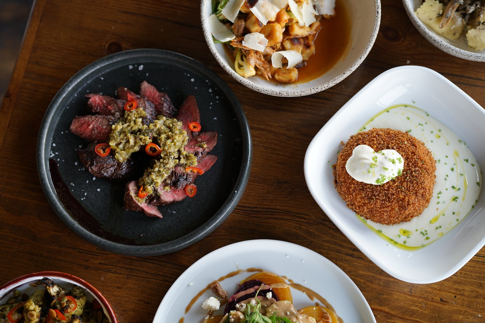
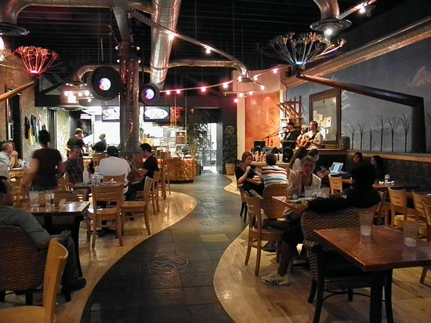
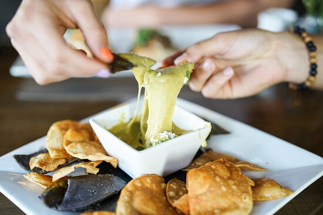

About
Here are some of my favorite places to eat in Provo!
Restaurants
-
Communal
A farm-to-table restaurant in downtown Provo, known for its seasonal and locally-sourced cuisine. Some of my favorite dishes include the roasted chicken, the Brussels sprouts, and the butterscotch pudding.
- Address: 102 N University Ave, Provo, UT 84601
- Phone: (801) 373-8000
- Visit Communal's Website
-
Guru's Cafe
A vegetarian and vegan-friendly cafe with a laid-back atmosphere and a diverse menu. Some of my favorite dishes include the hummus plate, the spinach and artichoke quesadilla, and the chocolate cake.
- Address: 45 E Center St, Provo, UT 84606
- Phone: (801) 375-8400
- Visit Guru's Website
-
Black Sheep Cafe
A southwestern-inspired restaurant with a vibrant decor and a creative menu. Some of my favorite dishes include the Navajo tacos, the chile relleno, and the tres leches cake.
- Address: 19 N University Ave, Provo, UT 84601
- Phone: (801) 607-2485
- Visit Black Sheep Cafe's Website

Thanks for reading about my a few of my favorite places to eat in Provo, Utah! <3